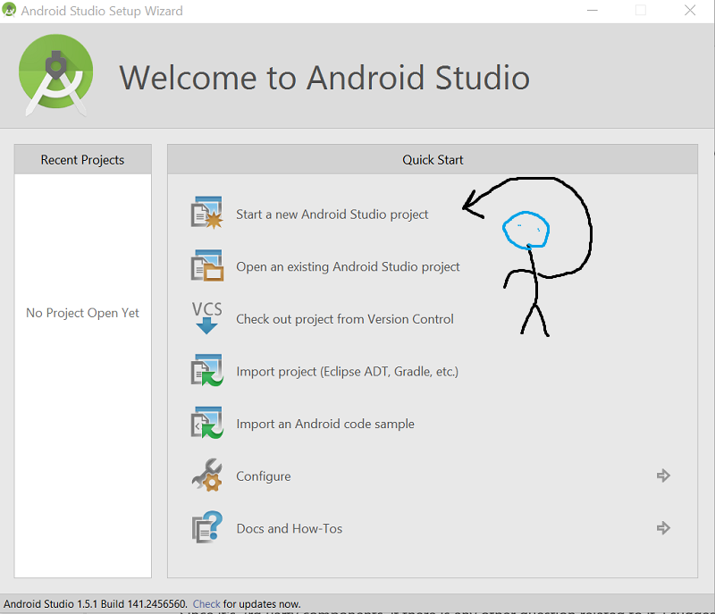
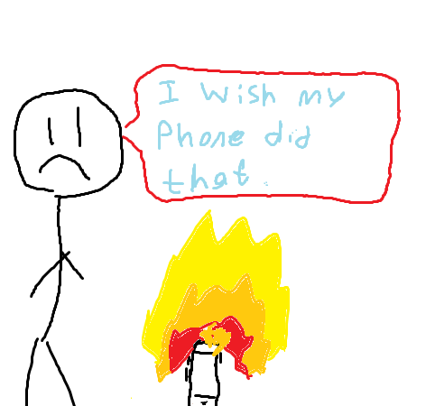
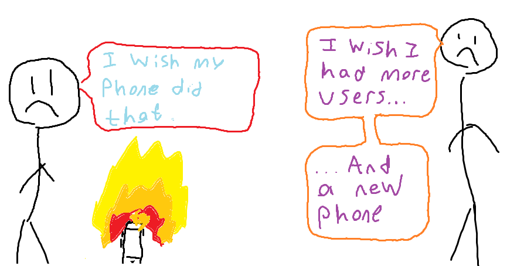
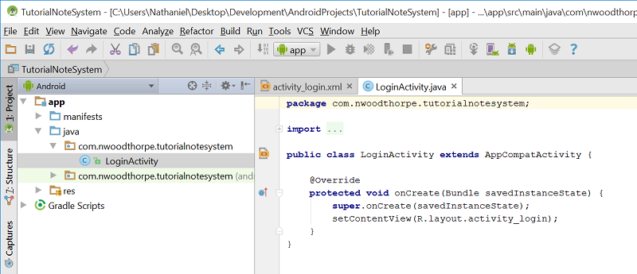
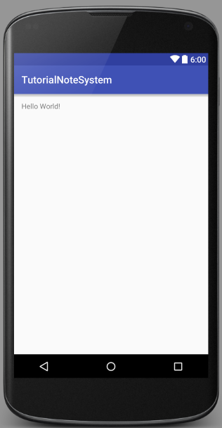

Android / Hello World: Creating your First App
Introduction:
Welcome to my tutorial series on Android App Development! This series will be targeted towards people with no Android experience at all. I will be assuming you have done or know how to do the following:
- The basics of Java. As much as I'd like to start my tutorials form the very beginning and target people with little to no programming experience, there's more interest in a standalone Android series. To be able to follow along in this series, you'll need to know Java types, syntax, and object oriented features including the uses of classes, class instances, objects, generics, and simple recursion. There are tons of great tutorials for this stuff online including TutorialsPoint and JavatPoint.
- Android Studio. Android Studio is the official Android development IDE provided by Google. This is the IDE I'll be using throughout the series, so I strongly recommend you do as well if you're trying to follow along. Eclipse is another popular IDE, but it's missing many Android-specific features that Android Studio has to offer.
- A device or emulator! It's hard to develop Android apps if you don't have an Android to run your apps on. If you have an Android phone, you can plug your phone into your computer and use it as a debugging device. There are a few steps you need to take to make this work which you can find here.
Creating a Project
Enough jibber-jabber, lets get started. Open up android studio and start a new project. If you've created a project before and don't see the intro window anymore, you'll need to go 'File' -> 'New' -> 'New Project...'. If you're being shown the intro menu as shown below, just click the new project button.

Naming your Project
Now you should see a window titled 'New Project' or 'Configure your New Project'. I guess we should decide what we want to build over the course of this tutorial. How about an app that store's the user's notes (text and image) locally? The basis of the app is very simple, just something the user can login to, type notes into and save them for later. As we move onto more complex topics, we can add more complex features such as an online login system, encryption, image support, metadata, and eventually cloud storage.
The dialog is asking for an application name. This can be anything you'd like, I'll name mine 'TutorialNoteSystem'. Go choose a name, then come back.

Next we need a company domain. The first time I made an Android app, I thought I was screwed at this step because I didn't own a company. Turns out all this field does is distinguishes your app from any other app of the same name. Even though you see 5 billion "Note Manager"s on the play store, they all actually have a company domain appended to the beginning that you can't see. I'll choose nwoodthorpe.com, pick anything you'd like!
'Project Location' is pretty straightforward, where would you like to store this project? Put it wherever you like, I won't judge you.
Android SDK Targeting
When you're done, hit next. Now you should see a window titled 'Target Android Devices'. This is where we choose what Android devices we want this app to work on. As lovely as it would be to say 'I want this to work on EVERYTHING', it's not practical.
Here's an analogy to help understand Android SDK Targeting. Imagine in Android 7.8, Google added a new function 'flameOutOfSpeaker()' which shoots flames out of the speakers. You choose 7.2 as your Minimum SDK because who would want flames to shoot out of their speakers? Later into development, you realise you need flames to shoot out of the speakers. Unfortunately since you set your Minimum SDK level too low, you don't get access to this function! If for some reason Android let you call it, your app would break on every Android phone below a certain Android version. (There are fancy ways to get around this, but we'll ignore that for now)

So then we should choose the highest Minimum SDK version to get access to all the awesome features? Not quite. Android users running an Android version below your Minimum SDK version won't be allowed to download your app from the Play Store, and that's potential app users lost. Even though Android 7.8 can shoot flames from the speakers, only 6% of Android users are on that version or above, which means only 6% of Android users can download your app.

It becomes a balancing act. Thankfully Google provides some helpful stats that helps make this decision a bit easier. In this window, you're told what percent of Android users will be able to download your app depending on which version you have selected. Scroll through them if you like! We'll choose API 15, over 96% of Android devices can download an app on API 15 and you aren't missing any terribly useful functions of the upper API levels, atleast not for our purposes. In reality, SDK targetting is more complicated than this, but this explanation will suffice for this series. If you want to learn more, check out
this tutorial from Xamarin.
Notice we also get to choose which form factors (device types) we'd like to develop for. If you were writing an app for an Android watch, or an Android TV, this is where you would select that. We're only interested in phones and tablets.
Finishing Up
Hit next, choose empty activity and hit next again. Android Studio provides us with some helpful templates, but whats the fun in that? We'll learn to write our own menus with more functionality and flexibilty than the templates!
Now we get to choose our main activity name. An activity in Android is a screen, or a page in our app, which combines front end XML and backend Java to give us a functional UI. Every different screen or menu gets its own activity. In a typical app, this might mean a login activity, a register activity, a main menu activity, and so on. The main activity is the activity that opens when the app opens. We can change this later, so we don't have to stress over it too much. We'll call it LoginActivity. Leave the layout name alone, and click finish!
Our First App
After a little bit of processing, Android Studio should give you a screen that looks like mine below. Congratulations! You've just created your first Android App! It doesn't do much yet, but you've gotten farther than 99% of people, and thats an acomplishment all by itself.

Now this code looks crazy, even if you have experience with Java. We'll ignore it for now, and get back to it super soon! For now, let's make our app say "Hello World!", as we usually do in other languages. Click the 'activity_login.xml' tab at the top of the window to switch over to our layout editor. We'll let it load and...

... It already says Hello World! Nice job, you made a 'Hello World' app without typing a line of code. If you'd like to run this app on your emulator or phone, just connect it to your PC (If you're using a phone) and hit the green 'play' arrow at the top of the screen.
That'll be it for this tutorial. Unfortunately we didn't get to get to code, but now that our app is setup and configured, we can begin programming next tutorial! If you have any suggestions, recommendations or comments, send me an email using my contact header.